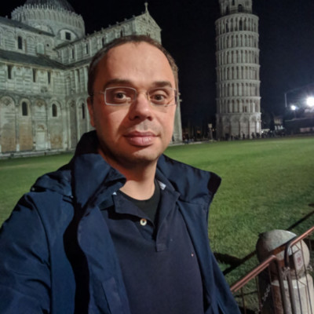

About Me

Currently, from April 2013, I am a researcher at Institute for Language and Speech Processing, Athena Research Center where I have been involved in various projects such as:
- LDS: European Language Data Space (ongoing)
- OpenGPT-X (ongoing)
- ELG: European Language Grid (Completed 6/2022)
- Apollonis/CLARIN:EL: Apollonis - CLARIN:EL (Completed 10/2021)
- ELRC: European Language Resource Coordination — supporting Multilingual Europe. (Completed)
- OpenMinTeD: Open Mining INfrastructure for TExt and Data (Completed 7/2018).
- FutureTDM: that seeks to improve Text and Data Mining uptake in the EU (Completed 9/2017).
- CLARIN-EL: Common Language Resources and Technology Infrastructure (Completed 12/2015).
- QTLaunchpad: A European Commission-funded project aiming to improve translation technology (Completed 06/2014).
Also from the start of 2023 I am a collaborating Researcher at Archimedes Research
Unit (part of Athena Research Center) working on the project Deductive Reasoning in Natural Language.
I am teaching two courses in the Interdisciplinary MSc Program "Language Technology" which is organized and administered by the Department of Informatics and Telecommunications of NKUA, in collaboration with the Institute for Language and Speech Processing (ILSP / "Athena" RC). Programming for Language Technology II (Spring 2020-2021, 2021-2022, 2022-2023, 2023-2024) and Natural Language Generation/Understanding (Fall 2021-2022, 2022-2023, 2023-2024)
Prior to Athena RC (June 2006 - February 2012), I was a Software Engineer/Researcher at the Natural Language Processing Group
of the Department of Informatics in Athens University of Economics and Business (AUEB);
the projects in which I was involved are listed below.
-
"A linear programming approach to multi-document text summarization and natural language generation from ontologies".
AUEB Basic Research Funding Program (BRFP) project.
-
Indigo: Interaction with mobile robots that have personalities
and support multimodal dialogues. European FP6-IST project.
-
Xenios:
Human-robot interaction using speech processing, natural language generation, and computer vision.
National "Information Society" project.
Also, in parallel, I was doing my Ph.D. in the same group.
I hold a) a Ph.D. in Natural Language Processing (title: "Automatic Generation of Natural Language Summaries", Nov. 2006 - Feb. 2012), from Department of Informatics, Athens University of Economics and Business b) an M.Sc. in Computer Science 2004-2006, from Department of Informatics, Athens University of Economics and Business and c) a B.Sc. in Informatics 1999-2004, from Department of Informatics, Athens University of Economics and Business.
For more information please check my LinkedIn profile.
You can contact me by sending an e-mail to galanisd AT gmail DOT com or galanisd AT athenarc DOT gr.
My papers can be found at Google Scholar.
Papers, Technical Reports, and Theses
- Odysseas S. Chlapanis, Ion Androutsopoulos, Dimitrios Galanis.
Archimedes-AUEB at SemEval-2024 Task 5: LLM explains Civil Procedure.
Proceedings of the 18th International Workshop on Semantic Evaluation (SemEval 2024) of the Annual Conference of the North American Chapter of the Association for Computational Linguistics (NAACL 2024), Mexico City, Mexico, 2024.
[PDF]
- Georg Rehm, Stelios Piperidis, Khalid Choukri, Andrejs Vasiļjevs, Katrin Marheinecke, Victoria Arranz, Aivars Bērziņš, Miltos Deligiannis, Dimitrios Galanis, Maria Giagkou, Katerina Gkirtzou, Dimitris Gkoumas, Annika Grützner-Zahn, Athanasia Kolovou, Penny Labropoulou, Andis Lagzdiņš, Elena Leitner, Valérie Mapelli, Hélène Mazo, Simon Ostermann, Stefania Racioppa, Mickaël Rigault, Leon Voukoutis.
Common European Language Data Space.
Proceedings of LREC-COLING, 2024.
[PDF]
- Georg Rehm, Stelios Piperidis, Dimitrios Galanis, Penny Labropoulou, Maria Giagkou, Miltos Deligiannis, Leon Voukoutis, Martin Courtois, Julian Moreno Schneider, Katrin Marheinecke.
European Language Grid: One Year After.
Proceedings of LREC-COLING, 2024.
[PDF]
- Maria Gavriilidou, Stelios Piperidis, Dimitrios Galanis, Juli Bakagianni, Penny Labropoulou, Athanasia Kolovou, Dimitris Gkoumas, Miltos Deligiannis, Kanella Pouli,
Iro Tsiouli, Leon Voukoutis and Katerina Gkirtzou.
The CLARIN:EL infrastructure: Platform, Portal, K-Centre.
Proceedings of the CLARIN Annual Conference, Selected Papers, 2023.
[PDF]
- Maria Gavriilidou, Stelios Piperidis, Dimitrios Galanis, Juli Bakagianni, Penny Labropoulou, Athanasia Kolovou, Dimitris Gkoumas, Miltos Deligiannis, Kanella Pouli,
Iro Tsiouli, Leon Voukoutis and Katerina Gkirtzou.
The CLARIN:EL infrastructure. Proceedings of the CLARIN Annual Conference, 2023.
[PDF]
- Ian Roberts, Andres Garcia Silva, Cristian Berrìo Aroca, Jose Manuel Gómez-Pérez, Miroslav
Jánoší, Dimitrios Galanis, Rémi Calizzano, Andis Lagzdiņš, Milan Straka, Ulrich Germann.
Language Technology Tools and Services. In Editor G. Rehm. European Language Grid. Pages 13-36, Springer, 2023.
[PDF]
-
Ian Roberts, Penny Labropoulou, Dimitrios Galanis, Rémi Calizzano, Athanasia Kolovou, Dimitris Gkoumas, Andis Lagzdiņš, Stelios Piperidis.
Using the European Language Grid as a
Consumer. In Editor G. Rehm. European Language Grid. Pages 13-36, Springer, 2023.
[PDF]
-
Stelios Piperidis, Penny Labropoulou, Dimitrios Galanis, Miltos Deligiannis, Georg Rehm.
The European Language Grid Platform: Basic Concepts.
In Editor G. Rehm. European Language Grid. Pages 13-36, Springer, 2023.
[PDF]
-
Dimitrios Galanis, Penny Labropoulou, Ian Roberts, Miltos Deligiannis, Leon Voukoutis,
Katerina Gkirtzou, Rémi Calizzano, Athanasia Kolovou, Dimitris Gkoumas, Stelios Piperidis.
Contributing to the European Language Grid as a Provider. In Editor G. Rehm. European Language
Grid. Pages 67-93, Springer, 2023.
[PDF]
-
Julian Moreno-Schneider, Remi Calizzano, Florian Kintzel, Georg Rehm, Dimitrios Galanis, Ian Roberts.
Towards Practical Semantic Interoperability in NLP Platforms.
In Proceedings of the 18th Joint ACL - ISO Workshop on Interoperable Semantic Annotation within LREC, 2022
[PDF]
-
Georg Rehm, Stelios Piperidis, Kalina Bontcheva, Jan Hajic, Victoria Arranz, Andrejs Vasiļjevs, Gerhard Backfried, José Manuel Gómez-Pérez, Ulrich Germann, Rémi Calizzano, Nils Feldhus, Stefanie Hegele, Florian Kintzel, Katrin Marheinecke, Julian Moreno Schneider, Dimitrios Galanis, Penny Labropoulou, Miltos Deligiannis, Katerina Gkirtzou, Athanasia Kolovou, Dimitris Gkoumas, Leon Voukoutis, Ian Roberts, Jana Hamrlová, Dusan Varis, Lukáš Kačena, Khalid Choukri, Valérie Mapelli, Mickaël Rigault, Jūlija Meļņika, Miro Janosik, Katja Prinz, Andres Garcia-Silva, Cristian Berrio, Ondřej Klejch, Steve Renals.
European Language Grid: A Joint Platform for the European Language Technology Community.
In Proceedings of the 16th Conference of the European Chapter of the Association for Computational Linguistics: System Demonstrations, 2021.
[PDF]
-
Rehm, G., Berger, M., Elsholz, E., Hegele, S., Kintzel, F., Marheinecke, K., Piperidis, S., Deligiannis, M., Galanis, D., Gkirtzou, K., Labropoulou, P., Bontcheva, K., Jones, D., Roberts, I., Hajic, J., Hamrlova, J., Kacena, L., Choukri, K., Arranz, V., Vasil¸jevs, A., Anvari, O., Lagzdin¸s, A., Mel¸n¸ika, J., Backfried, G., Dikici, E., Janosik, M., Prinz, K., Prinz, C., Stampler, S., Thomas-Aniola, D., Perez, J. M. G., Silva, A. G., Berrıo, C., Germann, U., Renals, S., and Klejch, O.
European Language Grid: An Overview.
In Nicoletta Calzolari, et al., editors, Proceedings of the 12th Language Resources and Evaluation Conference (LREC 2020), Marseille, France, 5. European Language Resources Association (ELRA), 2020.
[PDF]
-
Rehm, G., Galanis, D., Labropoulou, P., Piperidis, S., Welß, M., Usbeck, R., Kohler, J., Deligiannis, M., Gkirtzou, K., Fischer, J., Chiarcos, C., Feldhus, N., Moreno-Schneider, J., Kintzel, F., Montiel, E., Doncel, V. R., McCrae, J. P., Laqua, D., Theile, I. P., Dittmar, C., Bontcheva, K., Roberts, I., Vasiljevs, A., and Lagzdins, A. (2020).
Towards an Interoperable Ecosystem of AI and LT Platforms: A Roadmap for the Implementation of Different Levels of Interoperability.
In Georg Rehm, et al., editors,Proceedings of the 1st International Workshop on Language Technology Platforms (IWLTP 2020, co-located with LREC 2020), 2020.
[PDF]
-
Labropoulou, P., Gkirtzou, K., Gavriilidou, M., Deligiannis, M., Galanis, D., Piperidis, S., Rehm, G., Berger, M., Mapelli, V., Rigault, M., Arranz, V., Choukri, K., Backfried, G., Pérez, J. M. G., and Garcia-Silva, A.
Making Metadata Fit for Next Generation Language Technology Platforms: The Metadata Schema of the European Language Grid.
In Nicoletta Calzolari, et al., editors, Proceedings of the 12th Language Resources and Evaluation Conference (LREC 2020), Marseille, France, May. European Language Resources Association (ELRA), 2020.
[PDF]
-
P. Labropoulou, D. Galanis, A. Lempesis, M. Greenwood, P. Knoth, R. Eckart de Castilho, S. Sachtouris, B. Georgantopoulos, S. Martziou, L. Anastasiou, K. Gkirtzou, N. Manola and S. Piperidis.
OpenMinTeD: A Platform Facilitating Text Mining of Scholarly Content.
Proceedings of the 7th International Workshop On Mining Scientific Publications (LREC 2018), 2018.
[PDF]
-
M. Pontiki, D. Galanis, H. Papageorgiou, I. Androutsopoulos, S. Manandhar,
M. AL-Smadi, M. Al-Ayyoub, Y. Zhao, B. Qin, O. De Clercq, V. Hoste, M. Apidianaki,
X. Tannier, N. Loukachevitch, E. Kotelnikov, N. Bel, S. M. Jiménez-Zafra, G. Gülşen Eryiğit,
SemEval-2016 Task 5: Aspect Based Sentiment Analysis.
Proceedings of 10th International Workshop on Semantic Evaluation (SemEval), 2016.
[PDF]
-
P. Malakasiotis, E. Archontakis, I. Androutsopoulos, D. Galanis, H. Papageorgiou,
Biomedical question-focused multi-document summarization: ILSP and AUEB at BioASQ3.
Working Notes for the Conference and Labs of the Evaluation Forum (CLEF), 2015.
[PDF]
-
S. Piperidis, D. Galanis, J. Bakagianni, S. Sofianopoulos,
A Data Sharing and Annotation Service Infrastructure.
Proceedings of the 53rd Annual Meeting of the Association for Computational Linguistics and the 7th International Joint Conference on Natural Language Processing (ACL-IJCNLP), 2015.
[PDF]
-
M. Pontiki, D. Galanis, H. Papageorgiou, S. Manandhar, I. Androutsopoulos,
Semeval-2015 Task 12: Aspect Based Sentiment Analysis.
Proceedings of 9th International Workshop on Semantic Evaluation (SemEval), 2015.
[PDF]
-
S. Piperidis, D. Galanis, J. Bakagianni, S. Sofianopoulos.
Combining and Extending Data Infrastructures with Linguistic Annotation Services.
Proceedings of 2nd International Workshop on Worldwide Language Service Infrastructure (WLSI), 2015.
[PDF]
-
M. Pontiki, D. Galanis, J. Pavlopoulos, H. Papageorgiou, I. Androutsopoulos, S. Manandhar,
Semeval-2014 Task 4: Aspect Based Sentiment Analysis.
Proceedings of 8th International Workshop on Semantic Evaluation (SemEval), 2014.
[PDF]
-
D. Galanis, S. Karabetsos, M. Koutsombogera, H. Papageorgiou, A. Esposito, M.T. Riviello,
Classification of Emotional Speech Units in Call Centre Interactions.
Proceedings of the 4th International Conference on Cognitive Infocommunications (CogInfoCom), 2013.
[PDF]
-
I. Androutsopoulos, G. Lampouras and D. Galanis,
Generating Natural Language Descriptions from OWL Ontologies: the NaturalOWL System.
Journal of Artificial Intelligence Research, 48:671-715, 2013.
[PDF]
-
I. Androutsopoulos, G. Lampouras and D. Galanis,
Generating Natural Language Descriptions from OWL Ontologies: A Detailed Presentation of the NaturalOWL System.
Technical Report, Natural Language Processing Group, Department of Informatics, Athens University of Economics and Business, 2012.
[PDF]
-
D. Galanis, G. Lampouras and I. Androutsopoulos,
Extractive Multi-Document Summarization with Integer Linear Programming and Support Vector Regression.
Proceedings of the 24th International Conference on Computational Linguistics (COLING 2012), Mumbai, India, 2012.
[PDF]
-
D. Galanis, Automatic generation of natural language summaries, PhD thesis, Department of Informatics, Athens University of Economics and Business, 2012.
[PDF]
-
D. Galanis and I. Androutsopoulos.
A New Sentence Compression Dataset and Its Use in an Abstractive Generate-and-Rank Sentence Compressor.
Proceedings of the Language Generation and Evaluation Workshop (UCNLG+Eval), at the Conference on Empirical Methods on Natural Language Processing (EMNLP 2011), Edinburgh, UK.
[PDF]
-
D. Galanis and I. Androutsopoulos.
An Extractive Supervised Two-Stage Method for Sentence Compression.
Proceedings of Human Language Technologies: The 11th Annual Conference of the North American Chapter of the Association for Computational Linguistics (HLT-NAACL 2010), Los Angeles, CA, USA, 2010.
[PDF]
-
D. Galanis, G. Karakatsiotis, G. Lampouras and I. Androutsopoulos.
An Open-Source Natural Language Generator for OWL Ontologies and its Use in Protege and Second Life.
System demonstration, 12th Conference of the European Chapter of the Association for Computational Linguistics (EACL 2009), Athens, Greece, 2009.
[PDF]
-
D. Galanis and P. Malakasiotis,
AUEB at TAC 2008.
Text Analysis Conference (TAC 2008), Gaithersburg, Maryland, USA, 2008.
[PDF]
-
G. Karakatsiotis, D. Galanis, G. Lampouras and I. Androutsopoulos.
NaturalOWL: Generating Texts from OWL Ontologies in Protege and in Second Life.
System demonstration, 18th European Conference on Artificial Intelligence, Patras, Greece, 2008.
[PDF]
-
D. Vogiatzis, D. Galanis, V. Karkaletsis, I. Androutsopoulos and C.D. Spyropoulos,
A Conversant Robotic Guide to Art Collections.
Proceedings of the 2nd Workshop on Language Technology for Cultural Heritage Data, Language Resources and Evaluation Conference (LREC 2008), Marrakech, Morocco, 2008
[PDF]
-
D. Galanis and I. Androutsopoulos.
Generating Multilingual Descriptions from Linguistically Annotated OWL Ontologies: the NaturalOWL System.
Proceedings of the 11th European Workshop on Natural Language Generation (ENLG 2007), Schloss Dagstuhl, Germany, 2007.
[PDF]
-
D. Galanis.
"Development of a natural language generation engine for OWL ontologies.
M.Sc dissertation, Department of Informatics, Athens University of Economics and Business, 2006.(in Greek)
[PDF]
-
I. Androutsopoulos and D. Galanis.
A Practically Unsupervised Learning Method to Identify Single-Snippet Answers to Definition Questions on the Web
Proceedings of the Human Language Technology Conference and Conference on Empirical Methods in Natural Language Processing (HLT-EMNLP 2005), Vancouver, Canada, pp. 323-330, 2005.
[PDF]
-
D. Galanis.
Automatic construction of training examples to handle definition questions in question answering systems that use machine learning
B.Sc thesis, Department of Informatics, Athens University of Economics and Business, 2004.(in Greek)
[PDF]
|